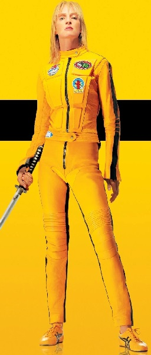
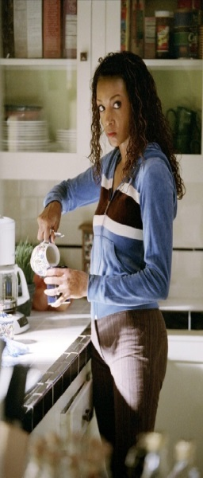
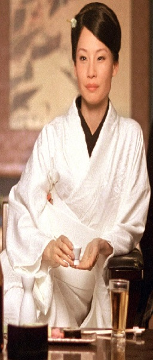
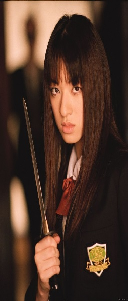

Quentin Tarantino: "How to over exagerate blood" - 9/12/2021
Crazy 88 fight scene alone used 450 gallons of blood and many people who watch the Kill Bill movies question whether or not people can bleed in such high quantities.
If you’re talking about the way it squirts, then it might be realistic. If you make a cut in just the right place on the body, tons of blood would gush out (which explains Elle Driver’s death in the original script). The squirting is silent, though, as compared to the sound effects used in the movie.
Also, in the Japanese version of the movie and The Whole Bloody Affair, the Crazy 88 fight scene is in color, not b/w. In the colored version, it can clearly be seen that the blood used is actually water.

Uma Thurman: "Working with Quentin" - 11/12/2021
Uma Thurman Says ‘Yes’ to Reuniting With Quentin Tarantino, but His Planned Retirement Could Get in the Way
Uma Thurman isn’t ruling out another collaboration with Quentin Tarantino. The “Pulp Fiction” and “Kill Bill” actress tells Entertainment Weekly that she would work with the director again “if he wrote a great part.”
We’ve had our fights over the years,” Thurman said. “When you know someone for as long as I’ve known him, 25 years of creative collaboration, yes, did we have some tragedies take place? Sure. But you can’t reduce that type of history and legacy. It would have been reduced to my car accident if I died.”
Thurman recently wrapped up her debut run on Broadway in “The Parisian Woman.” She next stars opposite fellow Tarantino regular Tim Roth in “The Con Is On.”

"Anime Style on western movies" - 12/12/2021
Reportedly a fan of Ghost in the Shell and Blood: The Last Vampire, movie maker Quentin Tarantino personally asked Production I.G to produce the animation sequence included in his world-hit Kill Bill.
When a rubout sequence from a yakuza film is presented in Japanese anime imagery with a score lifted from an Italian Western, what comes through is a sense of the thematic and emotional binding energy that gives all of these forms their enduring power. Tarantino evokes not just the gaudy, engaging surface of genre cinema but also its rebel spirit. As a result, the archetypal characters of Vol. 1 have a surprising undercurrent of emotional conviction that pulls us toward the ultimate confrontations of Vol. 2.

The Five Point Palm Exploding Heart Technique - 13/12/2021
"Quite simply, the deadliest blow in all of martial arts. He hits you with his fingertips at 5 different pressure points on your body, and then let's you walk away. But once you've taken five steps your heart explodes inside your body and you fall to the floor, dead."
Although its origin is unknown, one man was known to have mastered this deadly blow in his younger years: Pai Mei.
The move consists of a series of powerful jabs from the fingertips into five different pressure points on the victim's body. Once finished, the victim is then allowed to walk away. However, once they take five steps, their heart literally explodes inside their body, killing them instantly.